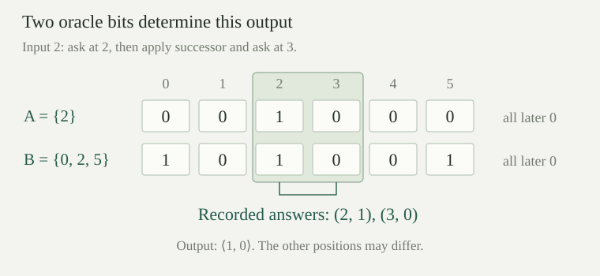

Fix any set \(A\subseteq\mathbb N\). Its membership oracle answers a query \(q\) with the characteristic value
A program receives an answer to each individual question it asks; it does not receive a finite list describing all of \(A\). The answer convention is the same as for ordinary characteristic functions. We allow every oracle, including \(\varnothing\) and \(\mathbb N\). Whether an ordinary program can compute \(\chi_A\) is a separate question.
An oracle program is a finite tree formed from
The four ordinary leaves and the four constructor forms are the paired-input programs; here \(\operatorname{prec}\) and \(\operatorname{find}'\) name the earlier recursion and search constructors. Only \(\mathbf Q\) is new. Programs are finite pieces of syntax independent of the oracle. Write \(E_A(c,x)\) for evaluation of \(c\) on numerical input \(x\) using \(A\). This is a partial value, with the established equality including divergence.
The ordinary leaves return \(0,x+1,\operatorname{left}(x),\operatorname{right}(x)\), respectively. The query leaf has the total evaluation \(E_A(\mathbf Q,x)=\chi_A(x)\). In particular, it is the argument presented to \(\mathbf Q\) that is queried, not a program name or an implicitly supplied input.
The two binary constructors have the strict interpretations
For pairing we run \(c\) first and then \(d\), requiring both outputs. For composition we run \(d\) first, then give its value to \(c\). An undefined required intermediate value prevents an output of the whole program. The oracle changes the answers available to the query instruction; it does not change these evaluation rules.
For recursion, set \(r_A(a,n)=E_A(\operatorname{prec}(c,d),\langle a,n\rangle)\). Then
The base calculation precedes every step. Computing at \(n\) requires its base value and the successive step values at \(0,\ldots,n-1\), all defined.
On input \(\langle a,m\rangle\), the program \(\operatorname{find}'(c)\) evaluates
in that order. It returns the first absolute index \(j\ge m\) whose test returns zero. Every preceding test from \(m\) to \(j-1\) must return a defined positive natural number. If one such test diverges, the search never passes it; a zero at a later test would not rescue the computation. If every test is defined and positive, the search also has no output. This is the same sequential search convention as before.
The case \(j=m\) has no preceding tests. Its returned value is \(m\), not zero unless \(m=0\). These boundary cases will be retained in the finite computation rules.
A query record is a finite list \(\tau\) of pairs \((q,b)\), where \(q\in\mathbb N\) and \(b\in\{0,1\}\). Write \([]\) for the empty list and \(\sigma^\frown\tau\) for concatenation. A successful derivation
is a finite tree built by the following rules. Its query answers are recorded but are not yet tied to any oracle. An ordinary leaf gives its specified output with empty record. A query leaf permits either bit: \(\mathbf Q;q\Downarrow_{[(q,b)]}b\) for \(b=0\) or \(b=1\). Pairing and composition combine derivations in their evaluation order:
A recursion derivation at \(\langle a,n\rangle\) supplies a finite chain \(v_0,\ldots,v_n\): a derivation of \(c;a\Downarrow v_0\), followed by one of \(d;\langle a,\langle i,v_i\rangle\rangle\Downarrow v_{i+1}\) for every \(i<n\). Concatenate their records in that order and return \(v_n\). At \(n=0\), only the base derivation is used.
A search derivation at \(\langle a,m\rangle\) supplies some \(j\ge m\), derivations of the tests at every \(i=m,\ldots,j\), defined positive outputs at \(i<j\), and output zero at \(i=j\). Concatenate those records in increasing test order and return \(j\). There is no rule that skips an undefined test or infers termination from a finite unfinished search.
The record is consistent with \(A\) if every recorded pair satisfies \(b=\chi_A(q)\). Both positive and negative answers must agree. The same number may be queried repeatedly; consistency then forces the repeated answers to agree too.
The evaluation rules define a partial function for each program and oracle. Precisely,
For fixed \(A,c,x\), any two such successful derivations have the same numerical output. If no consistent successful derivation exists, evaluation is undefined.
Proceed by induction on the finite program. At an ordinary leaf its value is prescribed; at a query leaf consistency selects the one value \(\chi_A(x)\). For pairing, both constituent evaluations must finish, and their successful derivations concatenate in the specified order. For composition the successful derivation of the inner calculation supplies exactly the input of the outer one. Conversely, the corresponding derivation rules supply these required evaluations.
At recursion, induct additionally on the numerical argument \(n\). A successful evaluation at zero supplies the base derivation. A successful evaluation at \(n+1\) supplies the already completed chain through \(v_n\) and a successful step at \(\langle a,\langle n,v_n\rangle\rangle\). Conversely, any displayed finite chain performs precisely these evaluations. At search, success at \(j\) means exactly the finitely many defined positive tests before \(j\), followed by its zero test. This is exactly the search rule in both directions.
The same induction proves uniqueness. The leaf answers are fixed, and uniqueness of constituent outputs fixes the intermediate values in pairing, composition and the recursion chain. If two searches claimed different stopping indices \(j<k\), their test at \(j\) would have output zero in the first derivation and a positive output in the second. Uniqueness for the smaller test program rules this out. Thus all successful derivations consistent with \(A\) give one partial value, as asserted.
A unary partial function is partial computable relative to \(A\) if it equals \(x\mapsto E_A(c,x)\) for some finite oracle program \(c\). This is exactly the smallest class containing the ordinary four initial functions and \(\chi_A\), and closed under strict pairing, composition, the displayed primitive recursion, and the displayed sequential search.
Induct on a program to place its evaluation in the closure class. The leaves are generators; each larger tree applies its matching closure operation to its immediate subprograms. In the other direction, induct on a finite construction in the smallest closed class. Represent a generating function by its leaf and a closure step by the corresponding program constructor. The semantic equations established above give equality of partial values, including blocked computations.
One can instead use the usual finite-arity closure rules with constants, successor, all projections, \(\chi_A\), composition, primitive recursion and minimization. The tuple-packing proof still applies: its tuple rearrangements use only ordinary pairing and projections. The new unary generator is represented by querying its decoded argument. Recursion uses the same rearrangement into \(\langle a,n\rangle\); minimization starts the sequential search at zero. Thus both closure presentations describe these same partial functions.
Let \(\iota(c)\) be the ordinary program \(c\), regarded as an oracle program with no query leaves. Then
Consequently every ordinary partial recursive function is partial computable relative to every \(A\). The functions \(\chi_A\) and \(\chi_{\mathbb N\setminus A}\) are both total computable relative to \(A\).
The embedding preserves every ordinary constructor. Induction on that syntax, with the recursion chain and successful search cases as above, identifies the two evaluations exactly. Its successful derivations have empty query record. Ordinary program completeness from gives the first consequence.
The query leaf itself computes \(\chi_A\). Choose an ordinary program \(z\) for the primitive-recursive zero test, which returns one at zero and zero at every positive input. Then \(\operatorname{comp}(\iota(z),\mathbf Q)\) computes \(\chi_{\mathbb N\setminus A}\): its inner value is a bit, and the zero test reverses it. No search for membership or nonmembership is needed once the oracle supplies that bit.
Take
On input \(x\), the left branch first asks \(x\). The right branch computes \(x+1\) and asks that number. The output is \(\langle\chi_A(x),\chi_A(x+1)\rangle\). For \(A=\{2\}\) and input \(2\), the successful record is \([(2,1),(3,0)]\), and the output is \(\langle1,0\rangle\). No other oracle position is queried.
The same derivation remains valid for \(B=\{0,2,5\}\): it gives the same answers at two and three, despite differing elsewhere. The following theorem makes this observation apply to every successful program.

If \(E_A(c,x)\downarrow=y\), there is a finite query set \(F\subseteq\mathbb N\) such that every \(B\) with \(B\cap F=A\cap F\) satisfies \(E_B(c,x)\downarrow=y\). In particular, there is \(u\in\mathbb N\) such that
Choose a finite successful derivation and its consistent query record \(\tau\) by . Let \(F\) be the set of numbers occurring as first coordinates in \(\tau\). It is finite, although a number may occur more than once in the list.
If \(A\cap F=B\cap F\), every recorded answer is also the correct answer for \(B\). The derivation tree itself is unchanged: ordinary leaves are independent of the oracle, query leaves have the same supplied bits, and every larger rule has exactly the same intermediate numerical values and finite chains. Thus it is a successful derivation consistent with \(B\), giving the same output \(y\).
For the bound take \(u=0\) when \(F=\varnothing\), and \(u=1+\max F\) otherwise. Every queried number is less than \(u\). Agreement below \(u\) therefore implies agreement on \(F\), proving the last assertion too.
The finite set and bound may depend on the program, oracle, input and successful computation. This is a statement about a defined value. It does not assert stability of divergence or one bound valid for all inputs. For example, the query program on input \(x\) can distinguish two oracles differing only at \(x\), however large \(x\) is.
If \(E_A(c,x)\downarrow=y\), some \(u\) satisfies
Here \(\{0,\ldots,u-1\}\) means \(\{q:q<u\}\), which is empty at \(u=0\). The sharper finite set \(A\cap F\) from also gives the same result.
The truncated oracle agrees with \(A\) at every queried position below the supplied bound. Alternatively \(A\cap F\) agrees with \(A\) on \(F\) itself. Apply finite use in either form. These finite sets depend on the successful computation; the conclusion does not give one finite replacement for the entire oracle on every input.
In the two-query example, is it enough that \(B\) contain every positively answered query? Compare \(A\cap F\subseteq B\) with \(A\cap F=B\cap F\). Could changing an unqueried position below the convenient bound \(u=4\) alter this output?
Merely preserving positive answers is insufficient. With \(A=\{2\}\), the oracle \(B=\{2,3\}\) still contains the positively queried number two, but changes the answer at three from zero to one. The output becomes \(\langle1,1\rangle\), rather than \(\langle1,0\rangle\).
The equality \(A\cap F=B\cap F\) says exactly that every queried membership bit agrees, including each negative answer. By contrast, changing only position zero, for instance to \(B=\{0,2\}\), leaves the two answers and the output unchanged. Agreement below \(u\) was a sufficient convenient condition; agreement on the actual query set is the more precise one.
Let \(s=\operatorname{find}'(\operatorname{comp}(\mathbf Q,\mathbf R))\) and start it at \(\langle0,0\rangle\) using \(A=\mathbb N\). What does it do? Is its divergence preserved by agreement with \(A\) below some finite bound?
At test \(j\), the right projection extracts \(j\), so the query is exactly \(j\). Every answer is one. The search has no zero test and never returns, even though every finite beginning has a finite query record consistent with \(A\). Such a beginning is not a successful derivation of an output: it lacks the final zero test required by the search rule.
For any proposed bound \(u\), take \(B=\{q:q<u\}\). It agrees with \(\mathbb N\) below \(u\), but this search returns \(u\): the first \(u\) answers are one, and the answer at \(u\) is zero. This includes \(u=0\), when the first test already returns zero. Thus no finite bound here stabilizes divergence. The successful-value hypothesis in finite use cannot be removed.
For oracle programs \(d,c\), define the syntactic substitution \(\operatorname{subst}(d,c)\) by replacing every query leaf of \(c\) by the finite program \(d\). Ordinary leaves stay unchanged, and substitution commutes with each constructor. For example,
Pairing and primitive recursion substitute into both children; search substitutes into its one child. This is a terminating recursion on the finite tree \(c\). An inserted copy of \(d\) is not recursively substituted again. In particular, \(d\) may itself contain queries, which will be answered by whichever oracle is used to run the resulting program.
Suppose \(A,B\subseteq\mathbb N\) and a fixed oracle program \(d\) satisfies
Then, for every program \(c\) and input \(x\), the actual substituted program satisfies
Induct on \(c\), proving equality of all possible successful outputs for every input. At a query leaf this is the supplied hypothesis on \(d\), including its termination at every argument. Ordinary leaves are unchanged. At pairing, both corresponding child computations have the same outputs; at composition, first the inner outputs agree and therefore give the same argument to the outer children. These implications work in both directions.
At primitive recursion, fix the input \(\langle a,n\rangle\) and induct on the length of the value chain. The base evaluations agree. If the current values agree, the step programs receive the identical input \(\langle a,\langle j,v_j\rangle\rangle\), so their next values agree. At search, a successful derivation on either side consists of the finitely many positive tests and the final zero test. The child induction hypothesis transfers every one of those outputs, preserving the same absolute stopping index. A successful derivation therefore exists on one side with value \(y\) exactly when it exists on the other with value \(y\).
By , this proves equality of the partial evaluations, including absence of any output. The replacement may ask additional questions of \(B\); equality of the query records was not required.
Totality of the replacement is essential. A program that answers correctly whenever it happens to halt, but diverges on some query, need not simulate the total oracle instruction. Taking \(d\) nowhere defined already makes the substituted query program undefined everywhere, while \(\mathbf Q\) itself always answers.
If \(A\) is computable, choose an ordinary program \(r\) computing its total characteristic function. Define \(\operatorname{erase}_r(c)\) to be an ordinary program by the same structural substitution as above, replacing \(\mathbf Q\) by \(r\), retaining ordinary leaves and applying every ordinary constructor to the translated children. Then
Consequently a unary partial function is computable relative to a computable \(A\) if and only if it is ordinary partial recursive.
The ordinary program \(r\) exists by the characteristic-function definition of a computable set and ordinary program completeness. The compiler is a structural recursion on \(c\), so it produces a finite ordinary tree rather than merely asserting the existence of some equivalent program.
Induction on \(c\) gives the syntactic identity \(\iota(\operatorname{erase}_r(c))=\operatorname{subst}(\iota(r),c)\). By , the inserted program computes \(\chi_A\) under any background oracle. Apply , and then the ordinary embedding identity, to obtain the displayed equality. It preserves divergence as well as defined outputs. This proves the relative-to-ordinary implication; embedding an ordinary program proves the other implication.
Compare the programs \(\mathbf0\) and \(\mathbf Q\) on an input \(x\), with oracle \(\varnothing\). They both return zero. Do they have the same query record and the same finite-use requirement? What does query elimination do here?
The ordinary zero program has empty query record, so its output is unchanged for every oracle and the bound \(u=0\) works. The query program records \([(x,0)]\). Its output is unchanged for precisely those oracles omitting \(x\); preserving this recorded computation requires keeping that negative answer. Its query set is \(\{x\}\), and \(u=x+1\) is a sufficient initial-segment bound. An empty set of positive answers is not an empty query record.
The characteristic function of \(\varnothing\) is the ordinary constant-zero function, so take \(r=\mathbf0\). The explicit compiler replaces every query leaf by an ordinary zero leaf and removes all oracle use, with equality of partial evaluations on every input. It need not preserve the old trace, only the computed partial function.